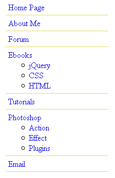

Một trong những tính năng mạnh mẽ nhất của jQuery là khả năng chọn các thành phần trong DOM một cách dễ dàng. Nói nôm na thì DOM là một dạng phả hệ của các thành phần HTML. Các thành phần này có mối tương quan với nhau như một “gia đình” HTML hạnh phúc. Khi chúng ta nói đến các mối quan hệ này bạn hãy liên tưởng đến mối quan hệ trong gia đình như ông bà, bố mẹ, anh chị em v.v.. Bạn có thể xem bài Hướng đối tượng dựa vào cấp bậc XHTML để biết rõ hơn về mối quan hệ của các thành phần HTML.
Cho dù bạn sử dụng Selector nào đi chăng nữa trong jQuery, bạn luôn bắt đầu bằng một dấu dollar ($) và một đôi ngoặc đơn như: $(). Tất cả những gì có thể được sử dụng trong CSS cũng có thể được lồng vào dấu ngoặc kép (”) và đặt vào trong hai dấu ngoặc đơn, cho phép chúng ta áp dụng các phương pháp jQuery cho tập hợp các phần tử phù hợp.
Ba thành phần quan trọng nhất của jQuery Selector là tên thẻ HTML, ID và Class. Bạn có thể chỉ sử dụng nó hoặc kết hợp với những Selector khác để chọn. Dưới đây là một ví dụ về mỗi Selecter khi sử dụng một mình.
| Selector | Css | Jquery | Diễn giải |
|---|---|---|---|
| Thẻ HTML | P | $('p') | Chọn tất cả các thẻ p trong tài liệu HTML |
| ID | #vi-du | $('#vi-du') | Chỉ chọn thành phần nào có ID là #vi-du |
| Class | .featured | $('.featured') | Chọn tất cả các thành phần có class là .featured |
Như đã nói ở chương 1, khi chúng ta thêm các phương pháp vào hàm $(), thì các phần tử nằm trong đối tượng jQuery sẽ được tự động lopp và diễn ra ở "hậu trường". Cho nên chúng ta không cần phải sử dụng bất cứ 1 vòng lặp nào cả, như vòng lặp for chẳng hạn, điều này thường làm trong khi viết code về DOM. Sau khi bạn đã nắm được những khái niệm cơn bản, bây giờ chúng ta sẽ khám phá thêm những tính năng mạnh mẽ khác của jQuery
Thư viện jQuery hỗ trợ gần như toàn bộ các CSS Selector chuẩn từ CSS1 cho đến CSS3. Chính việc này đã cho phép những người làm web không phải lo lắng về liệu trình duyệt có hỗ trợ những Selector mới hay không(đặc biệt là trình duyệt IE) miễn là trình duyệt đó có bật JS
Lưu ý: những người làm web có kinh nghiệm và trách nhiệm luôn nên áp dụng nguyên tắc nâng cao lũy tiến và giáng cấp hài hoài cho code của họ. Họ phải luôn chắc chắc ràng trang web luôn được hiển thị chính xác, cho dù không được đẹp như khi JS bị tắt hoặc khi nó được bật. Chúng ta sẽ bàn thêm về nguyên tắc này trong suốt chiều dài của loạt bài này
Để tìm hiểu jQuery sử dụng CSS Selector như thế nào thì cách tốt nhất là làm bằng ví dụ. Trong ví dụ dưới đây chúng ta sẽ sử dụng 1 dạng danh sách thường được dùng để làm thanh di chuyển trên web. Code HTML sẽ như sau:
Trong đoạn code HTML ở trên chúng ta đơn giản chỉ có unorder list với id ="nav" đóng vai trò là menu chính. Khi chưa có style gì áp dụng vào nó thì kết quả khi xem ở trình duyệt sẽ như hình dưới đây. Đây chính là định dạng mặc định của tình duyệt cho các Unorder List
Tất nhiên trong ví dụ này bạn hoàn toàn có thể sử dụng CSS để định dạng menu này, nhưng vì chúng ta muốn khám phá jQuery nên chúng ta tạm thời coi như CSS không tông tại. Giả sử trong ví dụ này bạn muốn những list-item chính có gạch chân mà những ul phụ của nó sẽ không có gạch chân
Thay vì chúng ta sẽ thêm class trực tiếp vào tài liệu HTML, chúng ta sẽ sử dụng jQuery để thêm class vào những list-item tầng 1 như: Homepage, About Me, Forum, Ebooks, Tutorials, Photoshop và Email
Như đã bàn ở chương 1, chúng ta bắt đầu đoạn code jQuery với $(document).ready(), nó sẽ chạy nhay khi DOM đã được load. Dòng thử 2 sử dụng Css Child selector (>) để thêm class="highlight" chỉ cho lít item tầng 1. Nói thêm ngôn ngữ của chúng ta thì đoạn code trên có nghĩa như sau: jQuery hãy tìm mỗi 1 list item(li) là con trực tiếp (>) của thành phần có ID là nav(#nav). Với class='highlight' được thêm vào, menu của chúng ta được như sau. 
Để định dạng cho những list item tầng 2 có rất nhiều cách. Những 1 trong những cách chúng ta sẽ sử dụng trong phần này là pseudo-class phủ định. Bằng cách này chúng ta sẽ đi xác định tất cả những itme nào mà không có class='highlight'. chúng ta sẽ viết code như sau:
Đoạn code trên có nghĩa như sau:
Attribute Selectors là bộ selector phụ của CSS cũng rất hữu dụng. Nó cho phép chúng ta chọn 1 thành phần nào đó dựa vào đặc tính HTML cảu nó như: thuộc tính Title của link hoặc thuộc tính Alt của image. Ví dụ để chọn tất cả các tấm hình có thuộc tính Alt chúng ta làm như sau:
Nếu bạn biết sơ qua về Regular Expressions trong ngôn ngữ lập trình PHP thì Attribute Selector trong jQuery chịu ảnh hưởng bởi phương pháp này. Ví dụ dấu (^) dùng để xác định giá trị tại điểm bắt đầu hoặc ($) kết thúc của 1 chuỗi. Nó cũng có thể sử dụng dấu (*) để chỉ 1 giá trị 1 tại 1 vị trí bất kỳ trong 1 chuỗi hoặc sử dụng dấu chấm than(!) để biểu thị 1 giá trị phủ định. Trong phần CSS này chúng ta sẽ định dạnh các đường liên kết như sau:
Sau đó chúng ta thêm 3 class là email, ebook và hyperlink vào những đường liên kết thích hợp bằng cách sử dụng jQuery. Để thêm 1 class vào tất cả những đường liên kết email, chúng ta sẽ tạo 1 selector và nó sẽ tìm tất cả các thành phần anchor(a) với thuộc tính href băt đầu bằng chuỗi mailto như sau:
Để thêm 1 class vào tất cả các đường liên kết đến những tệp tin .pdf, chúng ta sử dụng dấu $ thay vì dấu ^ như ở trên. Bởi vì lần này chúng ta chỉ chọn những đường liên kết nào có thuộc tính href kết thúc bằng cụm .pdf
Attribute selector cũng có thể được kết hợp với nhau. Ví dụ chũng ta cũng có thể thêm 1 class hyperlink cho tất cả các đường liên kết với giá trị href bắt đầu từ http và chứa cụm từ hyper trong nó
Với 3 class được áp dụng như trên cho các đường liên kết chúng ta sẽ được kết quả như hình dưới. Bạn sẽ thấy cạnh mỗi đường link sẽ có thêm 1 hình icon chỉ người dùng biết 1 cách rất trực quan là đường liên kết đó về cái gì
Dường như còn chưa vừa ý với những CSS Selector, jQuery có 1 hệ thống những Selector của riêng nó. Hầu hết những Selector này đều cho phép chúng ta chọn bất cứ thành phần nào trong tài liệu HTML. CÚ pháp cho những Selector này tường đồng với cú pháp của CSS pseudo-class, nơi mà các selector bắt đầu bằng dấu 2 chấm (:). Ví dụ, để chọn thể div thứ 2 của tập hợp những thẻ div có class='horizontal', chúng ta có cách viết code như sau:
Bạn nên lưu ý pử phần này là :eq(1) chọn thẻ div thứ 2 từ tập hợp trả về bởi vì JS đánh số array bắt đầu từ số 0. Ngược lại, CSS lại là bắt đầu từ số 1. Cho nên khi bnja sử dụng nth-child CSS Selector như là $('div:nth-child(1)') sẽ chọn tất cả các thẻ div là con đầu tiên của thành phần cha mẹ. Tất nhiên đấy là diễn giả là vậy, những nếu trong thực tế thì bạn nên sử dụng $('div:first-child') thì hợp lý hơn.
Hai trong số những jQuery selector rất hữu dụng là :ood và :even. Trong ví dụ dưới đây chũng ta sẽ sử dụng 1 trong 2 selecotr này để dịnh dạng cho bnagr kiểu kẻ sọc với code HTML như sau: